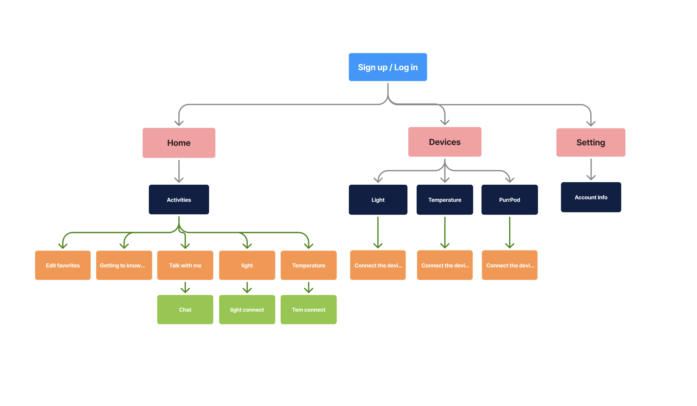

THE AI SPEAKER AND APPLACK A DELIGHTFUL USER EXPERIENCE, WITH AN UNFRIENDLY AESTHETIC AND AI PERSONALITY.ELDERLY USERS, WHO RELY ON THE HOME DEVICE APP FOR ASSISTANCE, STRUGGLE WITH ITS USABILITY, FINDING IT DIFFICULT TO NAVIGATE AND OPERATE.
Project Overview
Role
UX Researcher Graphic Designer Product Designer
Task
Designing an AI speaker and home device app to help the elderly achieve a better quality of life.
Project Type
Mobile app design product design
Duration, Years
1 months, 2024
Tool
Figma, Adobe photoshop, Adobe Illustration
The Research
The Goal
HOW do AI features make the experience friendly, and HOW can the elderly benefit from them?
Literature Review (loneliness)
Overview:
Social isolation and loneliness in older adults are significant public health concerns in the United States,
linked to serious risks such as dementia and other medical conditions.
Factors like living alone, mobility disabilities, and health problems contribute to these issues,
which are associated with increased mortality, higher blood pressure, Alzheimer's progression, depression, and weakened immune systems.
Implications for UX Design
These research insights emphasize the need for UX design strategies focused on improving social connectivity and accessibility for older adults,
addressing the root causes of isolation and mitigating its severe health consequences.
Literature Review (AI)
Overview:
General training in using digital technology for communication has shown promise in reducing loneliness among older adults.
Implications for UX Design
Enhancing Social Interactions:
Design features that facilitate and encourage social interactions to improve user engagement and well-being.
Supporting Vulnerable Groups:
Develop solutions specifically aimed at supporting groups prone to loneliness, such as the elderly and new mothers.
Promoting Mental Health:
 Incorporate elements that foster community, trust, and cooperation to promote mental health benefits like reduced anxiety and increased self-esteem.
Preventing Loneliness:
Create platforms and tools that help users build and maintain social connections to mitigate the risks associated with loneliness.
The Solutions
1. Start/ Sign up
Our start/signup prototype is designed to ensure users can effortlessly complete the signup process while enjoying a delightful aesthetic experience.
The app logo is closely related to the PurrPod speaker, reducing potential confusion for users. Additionally, a clear description of the signup process has been included to assist those who may be unfamiliar with how it works.
2. Customize color options/facial expressions
Users can customize colors and facial expression options.
Users are able to more comfortable and user-friendly environment, and Users can tailor the app’s appearance to match their personal preferences, making the experience more enjoyable and engaging
3.Talk with PurrPod
I introduced the ability for users to interact with PurrPod via voice or text through the app, specifically catering to those who may have difficulty moving around their home.
This feature allows them to control the speaker remotely, saving both time and energy."
The AI suggests options tailored to users' interests and continuously learns from conversations to provide more personalized assistance over time.
4.Devices
Users can connect their home devices and effortlessly control them directly from their phone.
The app automatically searches for compatible devices, allowing users to control their lights and room temperature seamlessly.
The Ideation
User Persona
I developed this persona based on insights gathered from interview data,
which has deepened my understanding of the challenges faced by the elderly.
This approach enables me to better empathize with their struggles and guides me in refining solutions that are tailored to their specific needs.
User Flow
I created a user flow for the cat-shaped AI speaker app, ensuring it's user-friendly for elderly users and effectively guides them to achieve their three main goals:
Home page
Devices
Setting page

The Design & Iteration
The Sketch
To overcome a creative block in defining feature functionalities, I started by sketching my ideas.
This approach helped me explore the app's layout and eliminate unnecessary features that could confuse elderly users.
Sketching allowed us to visualize and refine the wireframes,
ensuring that the final designs were intuitive, user-friendly, and visually appealing.
1 Version High - Fidelity
Problem Summary
Design Connection between purr pod speaker and app character
Users responded positively to the brief descriptions of how the buttons work in the app, which helps those unfamiliar with smartphone apps, such as elderly users, and reduces confusion.
After user testing, some users experienced difficulty with the AI, particularly in terms of customization, providing multiple options, and integrating into their schedules. To address this, we added a customized options onboarding process where users can input their personal interests.
Additionally, the AI now has a friendly personality, making it easier for users to browse through all the options it generates.
Lesson üí°
This project emphasized the critical importance of user interviews, particularly in understanding the perspective of elderly users who may be unfamiliar with smartphones and new technology.
It taught me to prioritize simplicity in app functionality, ensuring that elderly users can navigate and use the app with ease.
Additionally, this project taught me how to independently manage an entire project from start to finish.
Improvement ✨
If we had more time…
I would implement font size options for users with presbyopia or difficulty reading small text. This enhancement would significantly improve the user experience, particularly for elderly users.